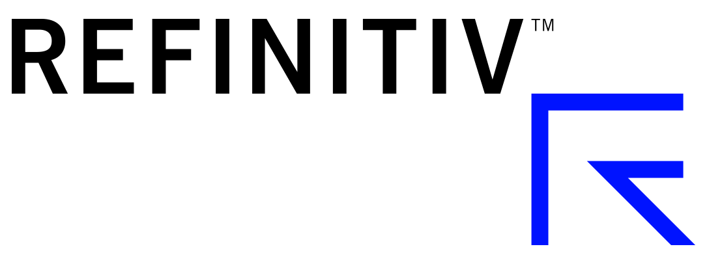

Khaya Job
Founder & Creative Director
Khaya is the founder of Nottingham’s Femme Fatale Gals, a creative platform aimed started to empower people through art and the power of vulnerability. Instagram / Website


For and by marginalised people in tech
22nd June 2019
Nottingham, United Kingdom
margins is a free one-day conference for people from marginalised backgrounds that work in/with/around technology (or hope to break into the industry!).
Everyone is welcome to join us in Nottingham for a day filled with inspiration, solidarity and compassion.
Register for margins here!margins would not be possible without the support of these companies:
Lead Sponsor:
Other Sponsors:
Would you like to join this list by sponsoring us? Please email us!
Please note that this schedule is preliminary & will probably change!
| Time | What's On? |
|---|---|
| 9:00 | Registration |
| 10:00-10:20 | Welcome & Introduction |
| 10:20-10:30 | Break |
| 10:30-11:10 | Talk and Workshop |
| 11:10-11:20 | Break |
| 11:20-12:00 | Talk and Workshop |
| 12:00-12:10 | Break |
| 12:10-12:50 | Talk and Workshop |
| 13:00-14:30 | Lunch |
| 14:30-15:10 | Talk and Workshop |
| 15:10-15:20 | Break |
| 15:20-16:00 | Talk and Workshop |
| 16:00-16:10 | Break |
| 16:10-16:30 | Wrap-Up & Goodbye |
Founder & Creative Director
Khaya is the founder of Nottingham’s Femme Fatale Gals, a creative platform aimed started to empower people through art and the power of vulnerability. Instagram / Website
Junior Developer at jh
Clark Seanor is a queer guy who's interested in web development, game design, and storytelling. He's a junior developer at JH, accessibility editor at Strange Horizons, and an Organisation for Transformative Works volunteer. In his free time, he creates cosplays and reads a lot. Twitter / Website
Agile Coach & Scrum Master
LiLi Kathleen practises creating environments that help people thrive, as an Agile Coach & Scrum Master. Listening is their superpower, which they use to look out for people & team health, stakeholder engagement and facilitating effective working. As a facilitator, they regularly design and lead workshops to include & engage everyone. Kathleen organises Liberating Structures London user group as part of a team. LiLi is writing a novel and two non-fiction books: a secular companion to The Artist’s Way, and a recipe book for people living with fatigue. Loves trees, herbal tea and learning about plant based nutrition. Often found singing. And dancing. Twitter / Website / Linkedin
Product & UX designer
Eriol is a product & UX designer who has worked in-house roles for 9+ years. Now working at Ushahidi, a humanitarian, non-profit technology leader, developing open-source, digital tools to help people with better democratic process, human rights issues, natural and human-made disasters.
Eriol is a non-binary, queer person who uses they/them pronouns and an LGBTQIA+ advocate and committee member of Bristol pride Festival.
They are deeply passionate about intersectional inclusion and promoting healthy attitudes towards mental health in the tech sector. Twitter / Linkedin / Ushahidi & Ushahidi Twitter
Games Designer & Organiser
Marina Díez is a Spanish game designer, events curator and organizer, Italian and German philologist, video games journalist, activist, WIGJ Ambassador and IGDA Women in Games Ambassador. In 2017 she founded her own women-only video games magazine Terebi Magazine and started making her own games. Besides, she is a collaborator for associations such as Femdevs, an organization for women developers, as well as a curator for video games events. She is currently based in London, UK and her dream is to make games that help others and that contribute to a different vision of the world. Twitter / Website
The conference is happening at the University of Nottingham, on its University Park campus in the Studio Space near Portland Building.
The campus can be easily reached via bus (NCTX, trentbarton) or tram (Stop: University of Nottingham). There are two free parking lots close to the venue (~5mins and ~10mins walking).
Please see our FAQs for Accessibility Requirements!